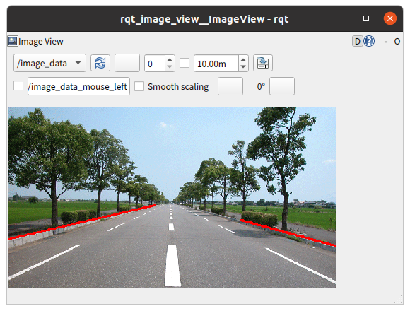

直線検出について
次のホームページを参考にしてプログラムしました。
OpenCV – ハフ変換 (Hough Transform) で直線を検出する方法
【OpenCV】cv2.HoughLinesP()の使い方【直線を検出する】
サンプルプログラム
sagaairport.pngから直線を検出しています。（要改善）
import rclpy
from rclpy.node import Node
from sensor_msgs.msg import Image
from cv_bridge import CvBridge
import cv2
import numpy as np
class ImagePublisher(Node):
def __init__(self):
super().__init__('image_publisher')
self.publisher_ = self.create_publisher(Image, 'image_data', 10)
timer_period = 0.1
self.timer = self.create_timer(timer_period, self.timer_callback)
self.bridge = CvBridge()
def timer_callback(self):
cv_image = cv2.imread('./src/cv_test/cv_test/sagaairport.png')
cv_gray_image = cv2.cvtColor(cv_image, cv2.COLOR_BGR2GRAY)
cv_canny_image = cv2.Canny(cv_gray_image, threshold1=100, threshold2=200)
rho = 1
theta = np.pi / 180
threshold = 100
min_line_len = 200
max_line_gap = 6
lines = cv2.HoughLinesP(cv_canny_image, rho, theta, threshold, np.array([]), minLineLength=min_line_len, maxLineGap=max_line_gap)
for line in lines:
x1, y1, x2, y2 = line[0]
cv_line_image = cv2.line(cv_image, (x1, y1), (x2, y2), (0, 0, 255), 3)
ros_image = self.bridge.cv2_to_imgmsg(cv_line_image, 'bgr8')
self.publisher_.publish(ros_image)
def main(args=None):
rclpy.init(args=args)
image_publisher = ImagePublisher()
rclpy.spin(image_publisher)
image_publisher.destroy_node()
rclpy.shutdown()
if __name__ == '__main__':
main()
<<<<<<< HEAD

=======
>>>>>>> refs/remotes/origin/master